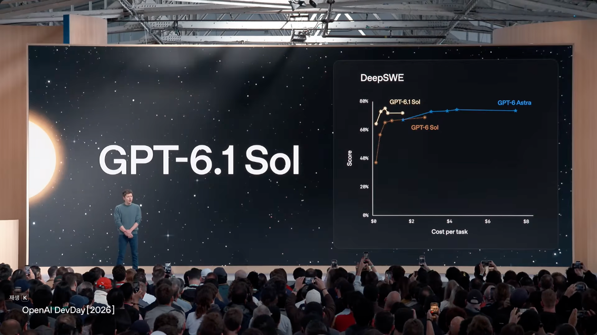
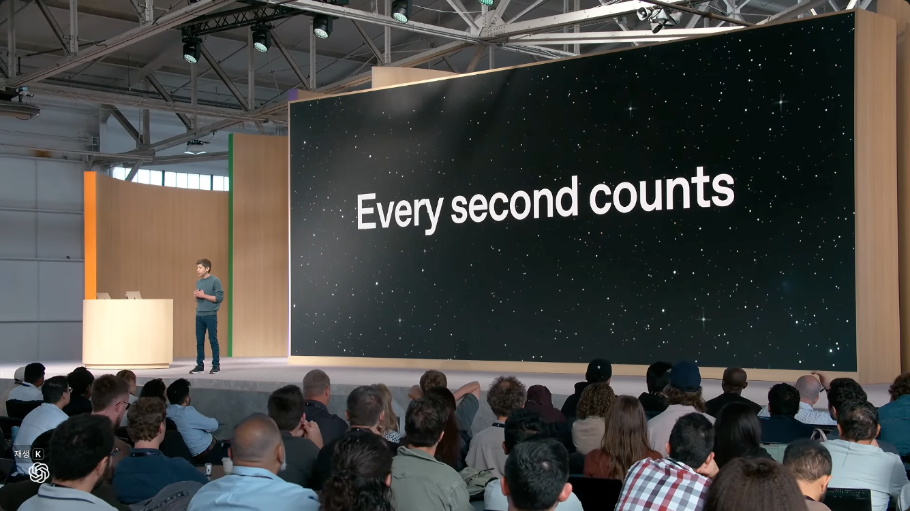
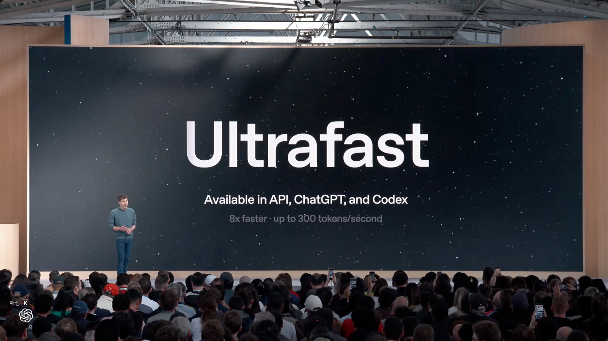
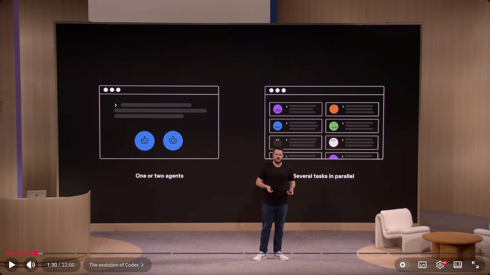
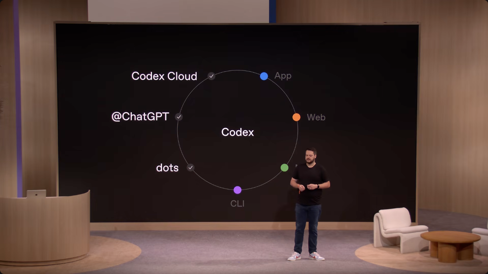
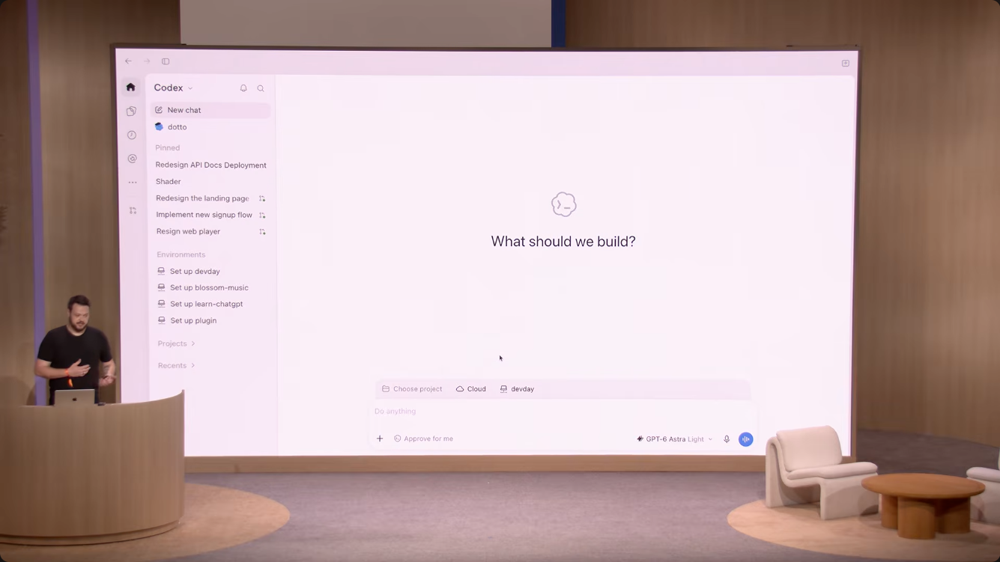
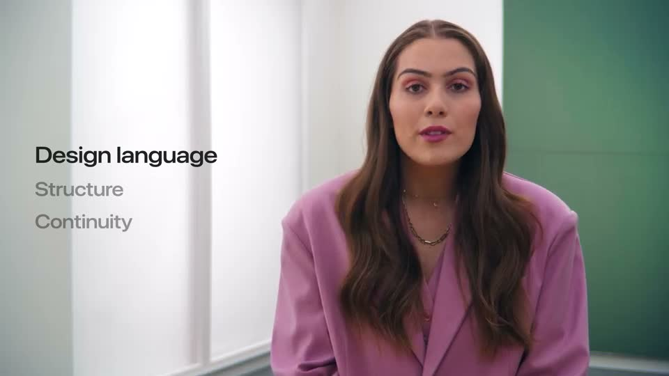
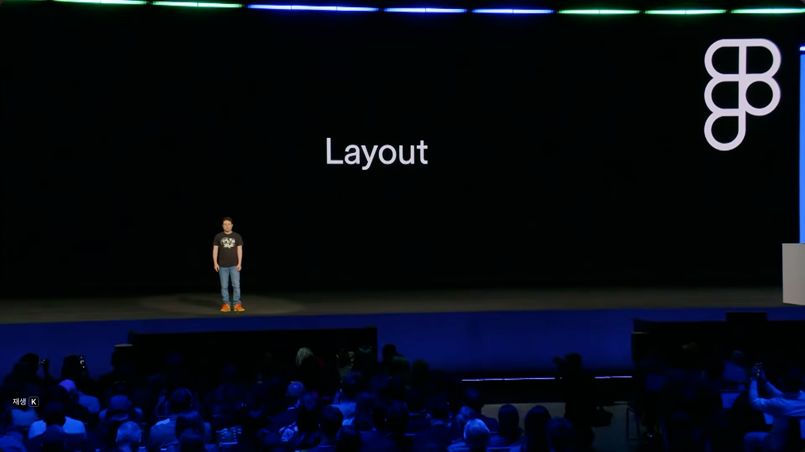
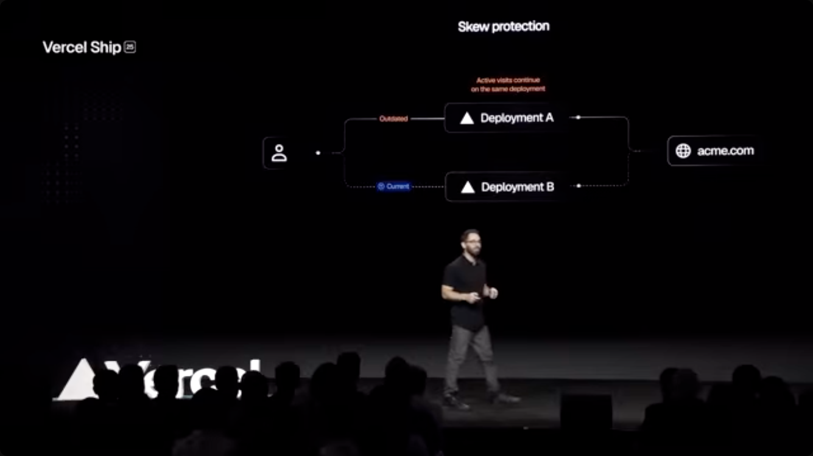

← 발표 템플릿
실제 세션에서
발표의 구성을 봅니다.
행사 사이트 대신 실제 발표 영상에서 확인한 장면입니다. 2026 DevDay 두 세션과 2025년 외부 사례 세 개를 비교했습니다. 전편을 완주한 조사가 아니라, 시간대를 이동한 프레임 관찰과 일부 구간 재생입니다. 아래 이미지는 조사 근거이며 템플릿 슬라이드의 제품 자산으로 사용하지 않습니다.
추가 조사에서는 풀컬러 인물 이미지 모음, 조건별 사진 비교, 작품 콜라주, 유색 선언과 발표자 소개를 확인했습니다. 사진·컬러 비교 보드에서 전후 장면과 역할별 활용 기준을 볼 수 있습니다.
OpenAI DevDay 2026
짧은 선언, 하나의 도표, 관계 도해, 실제 앱이 서로 다른 역할을 맡습니다.

KEYNOTE · 20:00메시지와 근거를 나눕니다.
주장은 짧게, 도표는 하나만 크게 배치합니다. 출처와 단위가 있는 증거형의 근거입니다.

KEYNOTE · 20:30한 문장으로 화면을 비웁니다.
항상 제목·본문·라벨을 반복하지 않습니다. 정보가 적은 장면 자체가 전환의 역할을 합니다.

KEYNOTE · 21:00크기와 여백으로 위계를 만듭니다.
큰 이름과 작은 보충 문장으로 읽는 순서를 정합니다. 초록 강조가 필수인 장면이 아닙니다.

CODEX SESSION · 01:30차이는 같은 기준에서 보여줍니다.
설명 문단보다 나란히 놓인 두 도해가 변화를 전달합니다.

CODEX SESSION · 03:30한 번에 한 관계를 설명합니다.
색은 접점을 구분할 때 사용합니다. 기본 바탕과 외곽선은 중립적으로 유지합니다.

CODEX SESSION · 04:00시연에서는 결과를 크게 보여줍니다.
설명을 덧붙이는 장식보다 실제 화면에 면적을 줍니다. 앱의 밝은 색도 그대로 존중합니다.
외부 실제 발표 · 2025
브랜드의 무대 장식과 발표 내용, 영상 송출 화면은 구분해서 관찰했습니다.

APPLE WWDC25 · 02:10명도만으로도 현재 위치가 보입니다.
발표자 옆의 챕터 안내입니다. 이를 검정 바탕 슬라이드라고 오인하지 않았습니다.

FIGMA CONFIG 2025 · 09:28화려한 행사에도 조용한 장이 있습니다.
브랜드 장식의 색을 본문 모든 장에 반복하지 않습니다. 짧은 제목만 남긴 장면을 참고했습니다.

VERCEL SHIP 2025 · 27:00복잡한 기능을 한 도식으로 좁힙니다.
선, 짧은 이름, 필요한 상태색만으로 한 가지 관계를 보여줍니다.
템플릿의 기본 바탕과 조작 요소는 중립적입니다. 사진·작품·UI의 원래 색은 보존하며, 색 타이포·범주색·소개 색면도 목적에 맞게 사용할 수 있습니다. 중앙 문장형 → 단일 도표형 → 전체 미디어형으로 배치와 정보량을 바꿉니다. 원본의 로고·캐릭터·배경이나 방송의 카메라 컷을 그대로 복제하지 않습니다. 영상만으로 원본의 제작 도구를 확인할 수는 없습니다.